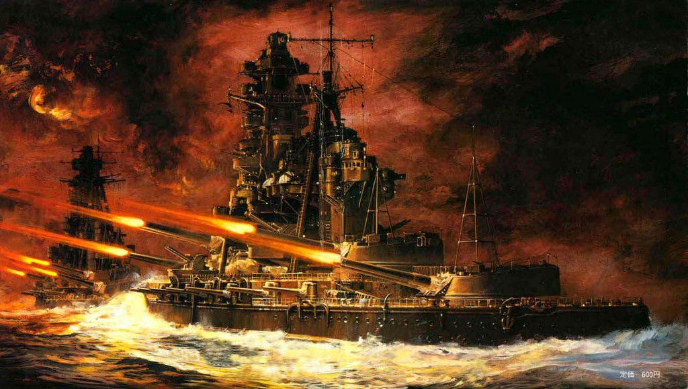

Интересные факты о морском флоте
Морской флот на протяжении многих столетий играет важную роль в истории человечества. Благодаря кораблям были открыты новые континенты, налажены торговые пути и обеспечена безопасность государств.

Удивительные факты
-
Самые большие корабли
- Современные авианосцы имеют длину более 300 метров.
- На их борту могут находиться тысячи членов экипажа.
-
Подводные лодки
- Атомные подводные лодки способны находиться под водой несколько месяцев.
- Некоторые из них могут совершать длительные автономные походы.
-
Морская навигация
- Раньше моряки ориентировались по звёздам.
- Компас долгое время был главным навигационным прибором.
-
Парусный флот
- Крупные парусники могли пересекать океаны.
- Скорость корабля зависела от силы и направления ветра.
-
Исследование океана
- Большая часть океана до сих пор изучена не полностью.
- Научные суда ежегодно совершают новые открытия.
Интересный факт
Сигнал SOS стал международным сигналом бедствия благодаря простоте передачи азбукой Морзе.

Современное значение флота
- Защита морских границ.
- Перевозка грузов между странами.
- Научные исследования.
- Поисково-спасательные операции.
- Поддержка мировой торговли.